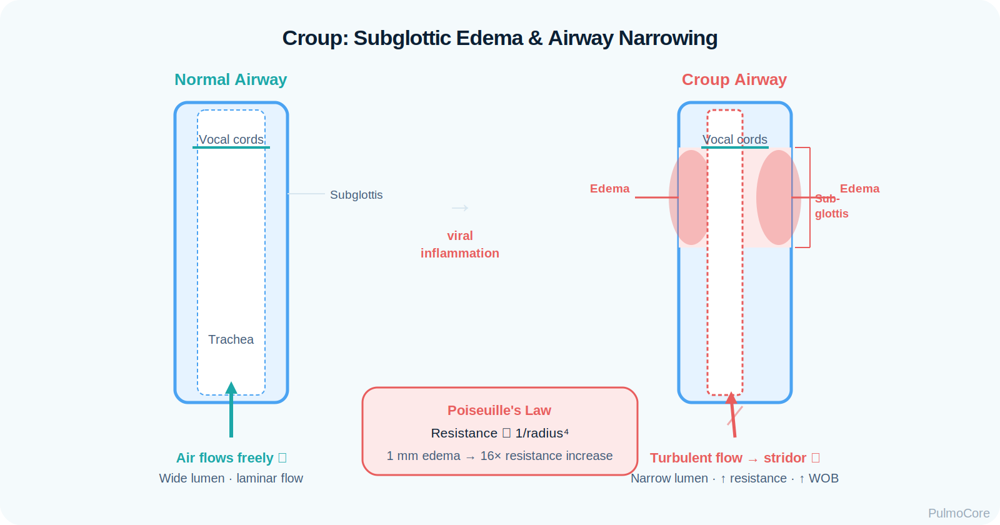
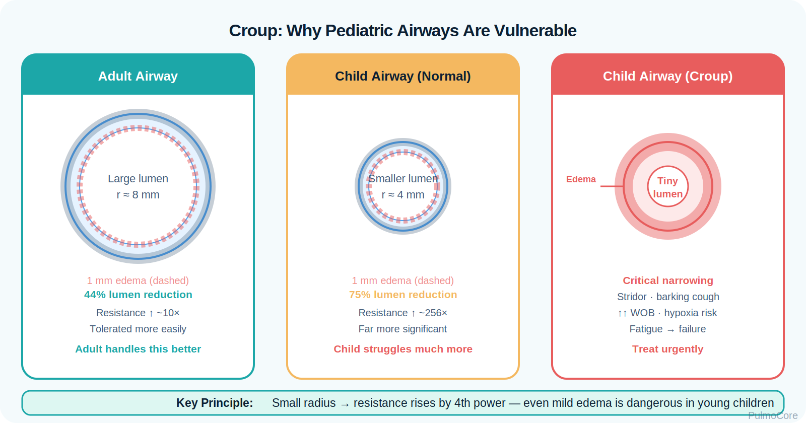
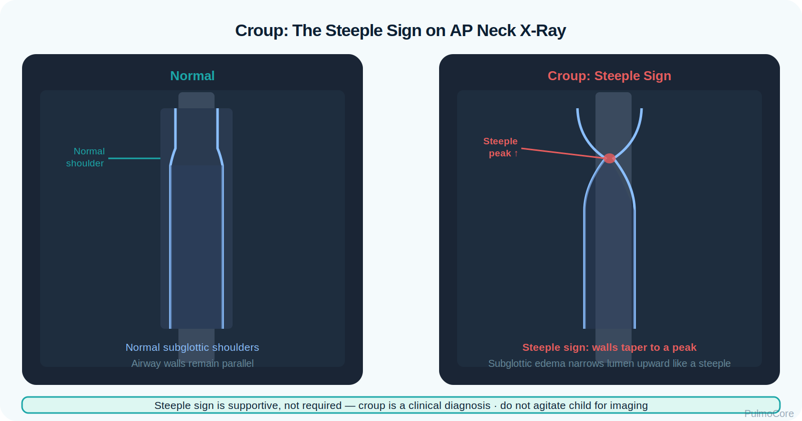

RT Clinical Connection
Croup is not primarily lower-airway wheezing. The RT listens for upper-airway stridor, evaluates work of breathing, minimizes agitation, and identifies when obstruction is becoming critical.
Croup, or laryngotracheobronchitis, is an acute pediatric upper-airway illness. Viral inflammation causes subglottic edema, barking cough, hoarseness, and inspiratory stridor. This lesson focuses on RT recognition, severity assessment, oxygen support, corticosteroids, nebulized epinephrine, monitoring, and escalation.
By the end of this module, learners should connect upper-airway anatomy, viral inflammation, severity cues, diagnostics, RT interventions, and escalation decisions.
Watch this quick overview before moving into the disease snapshot.
Croup is usually viral and affects the larynx, trachea, and bronchi. The most important narrowing is often below the vocal cords. In a small pediatric airway, even modest edema can sharply increase resistance.
Croup is not primarily lower-airway wheezing. The RT listens for upper-airway stridor, evaluates work of breathing, minimizes agitation, and identifies when obstruction is becoming critical.
Associate croup with barking cough, hoarseness, inspiratory stridor, viral onset, subglottic narrowing, dexamethasone, nebulized epinephrine for moderate/severe symptoms, and airway escalation if worsening.
Which statement best describes the primary airflow problem in croup?
Croup begins with viral inflammation of the upper airway. Swelling around the larynx and subglottic region narrows the airway lumen. Because resistance rises sharply as radius decreases, small pediatric airway swelling can create significant obstruction.

| Croup Change | What Happens | Why It Matters |
|---|---|---|
| Subglottic edema | Swelling narrows the upper airway below the vocal cords. | Creates inspiratory stridor and increased WOB. |
| Turbulent airflow | Air moves through a narrowed upper airway. | Produces stridor, especially with agitation. |
| Laryngeal irritation | Inflammation affects voice and cough quality. | Causes hoarseness and barking cough. |
| Agitation effect | Crying increases inspiratory flow demand. | Can worsen stridor and obstruction. |
| Fatigue | Respiratory muscles tire from sustained WOB. | Can lead to hypoventilation and failure. |
A quiet, exhausted child with decreasing stridor may be worsening, not improving. Less sound can mean less airflow.
Click each hotspot to reveal how the upper airway contributes to croup signs.
Croup is most often caused by viral infection, classically parainfluenza. Symptoms often worsen at night and may follow mild upper-respiratory symptoms. Differential diagnosis matters because some upper-airway emergencies mimic croup.

| Factor | Why It Matters | RT Thinking |
|---|---|---|
| Viral infection | Common cause of classic croup. | Expect viral prodrome and upper-airway signs. |
| Young age | Smaller airway radius makes edema more significant. | Monitor WOB closely. |
| Nighttime worsening | Symptoms often intensify overnight. | Assess current severity. |
| Agitation | Increases airflow demand and worsens obstruction. | Keep child calm; avoid unnecessary procedures. |
| Drooling/toxic appearance | Suggests alternate upper-airway emergency. | Escalate immediately. |
Choose the best category for each item, then check your answers.
Croup severity ranges from barking cough without distress to significant obstruction with stridor at rest, retractions, agitation, fatigue, and hypoxemia.
| Finding Type | What the RT May See |
|---|---|
| Symptoms | Barking cough, hoarse voice, URI symptoms, low-grade fever. |
| Breath sounds | Inspiratory stridor, transmitted upper-airway noise, diminished airflow if severe. |
| Work of breathing | Retractions, nasal flaring, tachypnea, agitation, fatigue. |
| Oxygenation | SpO₂ may be normal early; hypoxemia suggests severe disease. |
| Response clues | Improvement after corticosteroid and nebulized epinephrine; recurrence after epinephrine requires monitoring. |
Stridor at rest is a major severity marker. Barking cough alone may be mild; stridor at rest with retractions is not mild.
Croup is usually a clinical diagnosis. Testing should not agitate the child or delay treatment. Imaging is not required for classic presentations but may show subglottic narrowing when obtained.

| Assessment Data | Croup Pattern | RT Interpretation |
|---|---|---|
| Clinical presentation | Barking cough, hoarseness, inspiratory stridor. | Classic pattern supports croup. |
| SpO₂ | Often normal in mild/moderate disease. | Low SpO₂ suggests more severe obstruction or fatigue. |
| Neck/chest x-ray | May show steeple sign from subglottic narrowing. | Not needed if presentation is classic and stable. |
| ABG | Not routine; may show hypoventilation if failing. | Use only when clinically necessary and safe. |
| Differential signs | Drooling, toxic appearance, dysphagia, sudden choking. | Think epiglottitis, bacterial tracheitis, foreign body. |
Severity depends on stridor, retractions, air entry, mental status, and oxygenation. The RT should reassess whether obstruction is improving or progressing.
| Severity | Typical Pattern | RT Action |
|---|---|---|
| Mild | Barking cough, no stridor at rest, minimal/no retractions. | Corticosteroid as ordered; monitor and educate. |
| Moderate | Stridor at rest, retractions, alert but distressed. | Oxygen if needed, corticosteroid, nebulized epinephrine, close monitoring. |
| Severe | Marked retractions, decreased air entry, hypoxemia, fatigue, altered mental status. | Urgent escalation and advanced airway preparation. |
A 2-year-old has barking cough, inspiratory stridor at rest, moderate retractions, and SpO₂ 94%. Which severity level best fits?
The key question is whether the child has stable upper-airway obstruction or impending failure.
| Red Flag | Why It Matters |
|---|---|
| Stridor at rest that worsens or does not improve | Suggests significant obstruction. |
| Marked retractions or poor air entry | May indicate severe obstruction and fatigue. |
| Cyanosis or low SpO₂ | Late/severe sign in upper-airway obstruction. |
| Altered mental status, drowsiness, exhaustion | Possible impending respiratory failure. |
| Drooling, dysphagia, toxic appearance | Think epiglottitis or bacterial tracheitis. |
| Sudden onset after choking | Think foreign body aspiration. |
Management focuses on keeping the child calm, reducing airway edema, supporting oxygenation, and escalating rapidly when obstruction becomes severe.
| Intervention | When Used | Why It Helps |
|---|---|---|
| Keep calm / parent-held position | All severities. | Reduces agitation-related worsening. |
| Humidified oxygen | Hypoxemia or distress. | Supports oxygenation while limiting agitation. |
| Dexamethasone | Most croup cases when ordered. | Reduces airway inflammation; onset is not immediate. |
| Nebulized epinephrine | Moderate to severe croup. | Temporarily reduces mucosal edema by vasoconstriction. |
| Observation after epinephrine | After treatment. | Symptoms can recur as medication effect wears off. |
| Airway escalation | Severe distress, fatigue, poor response. | Protects ventilation/oxygenation if obstruction progresses. |
Select the steps in the best general order for moderate croup with stridor at rest.
The RT is central to recognizing upper-airway obstruction, delivering aerosol therapy safely, monitoring response, minimizing agitation, and escalating concerns early.
| RT Task | What to Assess or Do | Why It Matters |
|---|---|---|
| Assess airway sound | Stridor location, timing, intensity, air entry. | Tracks obstruction severity. |
| Assess WOB | Retractions, nasal flaring, tachypnea, fatigue. | Identifies progression. |
| Support oxygenation | Use blow-by or mask if tolerated. | Maintains SpO₂ while reducing agitation. |
| Administer aerosol therapy | Nebulized epinephrine as ordered. | Reduces mucosal edema temporarily. |
| Monitor rebound | Observe after epinephrine. | Symptoms may return as effect wears off. |
| Escalate | Call provider/airway team for poor response or fatigue. | Prevents delayed airway rescue. |
This guided case reveals one clinical stage at a time. Learners make an RT decision, receive feedback, and then continue.
A 2-year-old is brought to the ED with barking cough, hoarse voice, and inspiratory stridor when crying.
Decision Question: What is the best initial RT approach?
The child now has stridor at rest with moderate retractions. SpO₂ is 93% and the child is still alert.
Decision Question: Which therapy is commonly indicated for moderate croup?
The child improves after nebulized epinephrine. Stridor decreases, but the provider wants observation.
Decision Question: Why is observation important?
Later, the child becomes drowsy with poor air entry, severe retractions, and SpO₂ 86% despite oxygen.
Decision Question: What should the RT do?
Answer each question to complete this activity. Answer choices shuffle each time the lesson opens.
A toddler has barking cough, hoarseness, and inspiratory stridor. Which area is most involved?
Which finding most strongly indicates moderate or worse croup?
Which medication is commonly used to reduce airway inflammation in croup?
Which finding should make the RT question a simple croup diagnosis and escalate concern?
Croup is viral upper-airway swelling that narrows the subglottic airway and causes barking cough, hoarseness, and inspiratory stridor.
No. Croup is primarily upper-airway obstruction with stridor. Asthma is lower-airway obstruction with bronchospasm and wheezing.
Crying increases airflow demand through a narrowed upper airway, which can worsen stridor and work of breathing.
It is commonly used for moderate to severe croup, especially stridor at rest or significant work of breathing.
Epinephrine temporarily reduces mucosal edema. Symptoms can recur as the effect wears off.
Drooling, dysphagia, toxic appearance, severe high fever, sudden choking onset, or poor response to therapy should raise concern for alternate diagnoses.
Croup is acute viral laryngotracheobronchitis that causes upper-airway edema, most importantly in the subglottic region. The hallmark findings are barking cough, hoarseness, and inspiratory stridor. RT priorities include calm assessment, oxygen if needed, corticosteroid and nebulized epinephrine as ordered, close reassessment, and early escalation for severe obstruction.
Terms are stored once and can power inline tooltips, glossary entries, and flashcards.
Click the card to flip it. Use Term → Definition or Definition → Term mode. Mark known cards to move them into the completed pile.